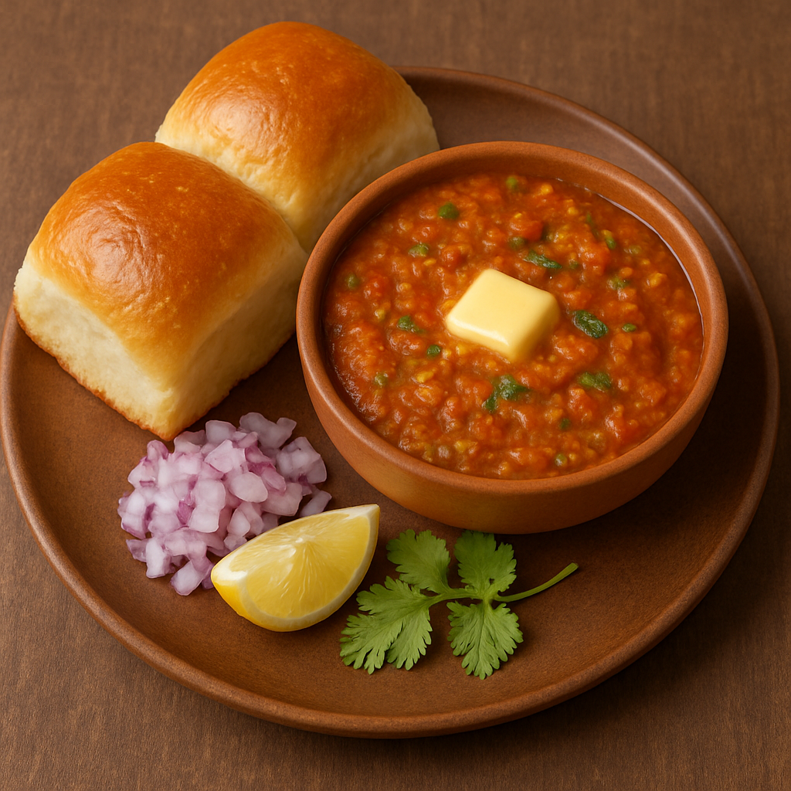

Pav Bhaji

Description
Pav Bhaji is Mumbai's most iconic street food—comforting, spicy, and absolutely delicious. The "bhaji" is a thick vegetable mash made by cooking potatoes, peas, carrots, cauliflower, and bell peppers with tomatoes, onions, butter, and pav bhaji masala. It's mashed and simmered until the flavors meld into a buttery, spicy explosion. Served with lightly toasted pav (soft bread rolls) slathered in butter, and garnished with chopped onions and a squeeze of lemon, Pav Bhaji is a feast for the senses.
Originally created as a quick meal for textile workers in Mumbai, Pav Bhaji has evolved into a must-have snack across India. It's perfect for casual dinners, family gatherings, or even party appetizers. Its spicy aroma, vibrant colors, and satisfying texture make it both crowd-pleasing and comforting. Whether eaten on the street or at home, Pav Bhaji is a flavor-packed dish that never goes out of style.
Ingredients
- 2 potatoes (boiled and mashed)
- 1/2 cup cauliflower (finely chopped)
- 1/2 cup green peas
- 1/2 cup carrots (chopped)
- 1 capsicum (chopped)
- 2 onions (finely chopped)
- 2 tomatoes (pureed)
- 1 tbsp ginger-garlic paste
- 1-2 green chilies (chopped)
- 2 tsp pav bhaji masala
- 1 tsp red chili powder
- Salt to taste
- Butter (generous amount)
- 6 pav buns
- Fresh coriander & lemon wedges (for garnish)
Cooking Instructions
- Boil potatoes, peas, carrots, and cauliflower until soft. Mash well.
- Heat butter in a pan. Add onions and sauté until translucent.
- Add ginger-garlic paste and green chilies. Cook till fragrant.
- Add capsicum, cook 2-3 mins. Then add tomato puree, pav bhaji masala, chili powder, and salt.
- Mix in the mashed vegetables. Add a bit of water and simmer for 10-15 mins. Mash while cooking for a smooth texture.
- Toast pav buns with butter on a hot tawa.
- Serve bhaji with buttered pav, onions, and lemon wedges.
Home